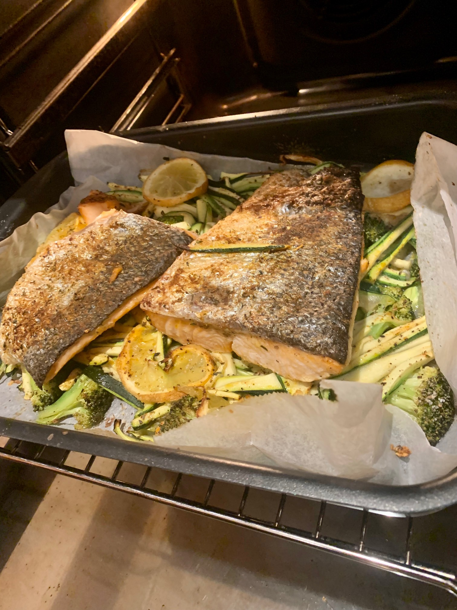
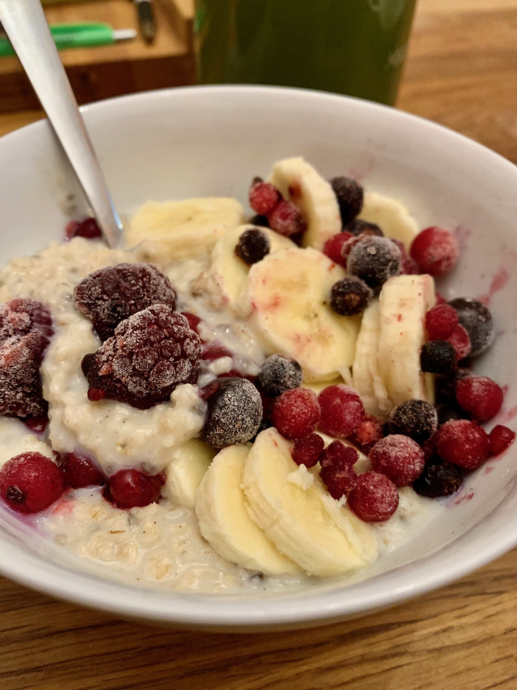
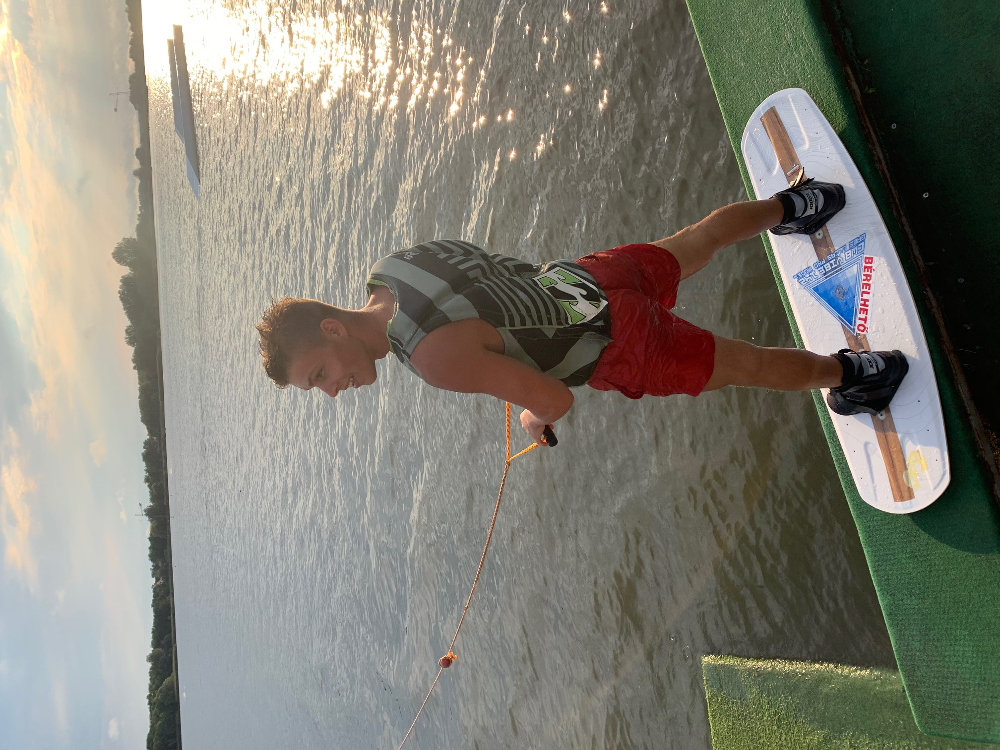

Hobbik és kedves elfoglaltságok
Főzés
 
Születésemtől kezdve szerettem a hasamat mint a férfiak nagy része és ez a szeretetem azóta kissé tovább fejlődött, így már nem csak az étkek elfogyasztását élvezem és művelem hanem az elkészítését is.Számos főzőkurzust végeztem és versenyen is indultam, habár ennek a szenvedélynek kézzel fogható eredménye még az ínycsiklandó falatokon kívül nincs, de ez nem tántorít el e kedvelt elfoglaltságomtól.
Sportok
Mindig is a sportok szerelmese voltam. Lényegtelen volt, hogy egyéni vagy tömegsportról van szó, amíg ki nem hoztam belőle a maximumot addig űztem.

Elsőként óvodásként kóstoltam bele a sportolás világába és egyből rabul ejtett. Futballozással és úszással kezdtem, majd ez kézilabdává és jégkoronggá vált. Sikereket az eddig felsorolt sportok mindegyikében értem el, de számomra legkedvesebb és legértékesebb az mégis a 2016-ben elért Országos Diákolimpia Férfi Gyorsváltó második helyezése.
 Azóta kipróbáltom további számtalan sportot, csak hogy párat említsek: wakeboard, snowboard, tenisz, sportlövészet, atlétika, tandemugrás, golf és sok más.
Azóta kipróbáltom további számtalan sportot, csak hogy párat említsek: wakeboard, snowboard, tenisz, sportlövészet, atlétika, tandemugrás, golf és sok más.
Továbbá a 2019.évi MSSZ Target Sprint Országos Bajnokságon junior fiú csapat kategóriában 1.helyezést értem el.